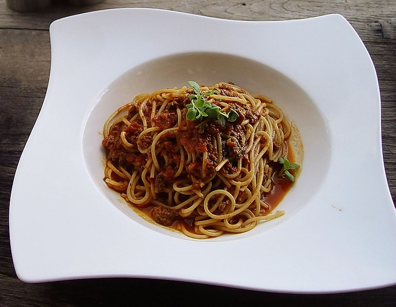

Spaghetti bologneise, otherwise also known as spaghetti bolognese, and spaghetti bolognaise, is a pasta and meat dish invented sometime in the last century. Many people consider it to be Italian in origin, but it is not actually considered a true Italian dish in Italy. It has become quite popular in English speaking countries, such as Australia, the USA, and Britain.
I grew up eating a vegan version of this, due to the fact that my parents are vegan, but I now eat the actual meat-version, which in my humble opinion is far superior. Many people add vegetables to the bologneise sauce when cooking it, I do not. I also don't add any salt to the dish, as I'm not a fan of the taste of salt and I prefer to let other people decide how much if any salt they wish to add to their own plate of spaghetti bologneise.
I don't use your typical measurements for making it, going by eye and feel instead. The below is what I consider the lazy-man's version of bologneise, because I have better things to do then spend hours chopping and cooking. This is a dish I could happily eat every day for the rest of my life.